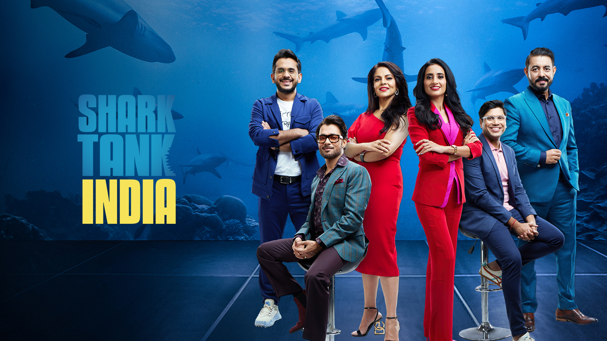

Shark Tank Analysis
Conducted an in-depth analysis of the Shark Tank-India dataset utilizing Power BI to identify the most invested industry and determine the highest success rate, providing valuable insights into entrepreneurial trends and investment patterns.
